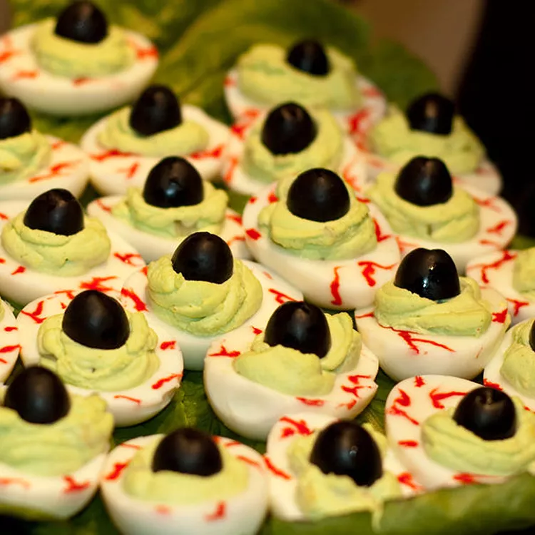

Eye of Newt

Description
Bubble, bubble. Toil and trouble. This appetizer is commonly known and used but, I have put my own little twist on this recipe. It is deviled eggs made to look like the eyeballs of a lizard. It a hit with the kids at my Halloween party. Watch them get eaten up at your party!
Ingredients
- 12 eggs
- 1 tablespoon sweet pickle relish
- 1 tablespoon mayonnaise
- 1 pinch celery salt
- 2 drops green food coloring, or as needed
- 1 (6 ounce) can sliced black olives, drained
Steps
- Place all of the eggs into a large pot so they can rest on the bottom in a single layer. Fill with just enough cold water to cover the eggs. Bring to a boil, then cover, remove from the heat and let stand for about 15 minutes. Rinse under cold water or add some ice to the water and let the eggs cool completely.
- Peel and slice in half lengthwise. Remove the yolks from the eggs and place them in a bowl. Mix in the relish, mayonnaise, celery salt, mustard, and food coloring.
- Spoon this filling into the egg whites and place them on a serving tray. Round the top of the filling using the spoon.
- Place an olive slice on each yolk to create the center of the eye. Dab a tiny bit of mayonnaise in the center of the olive as a finishing touch.
Home